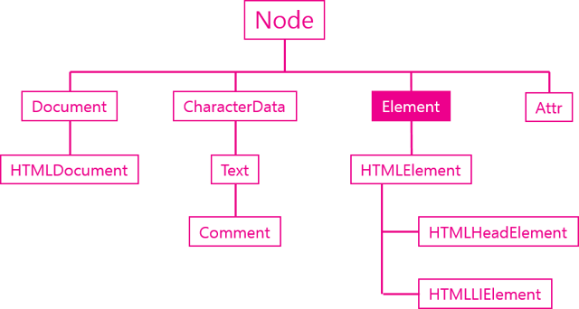

Document Object Model로 웹 페이지를 자바스크립트로 제어하기 위한 객체 모델을 말함
Window 객체의 document 프로퍼티를 통해서 사용할 수 있다.
Window 객체가 창을 의미한다면 Document 객체는 Window에 로드된 문서를 의미함
문서를 제어하는 방법에 대한 내용을 다룰 예정
문서를 자바스크립트로 제어하려면 제어의 대상에 해당하는 객체를 제일 먼저 찾아야 한다
문서 내에 객체를 찾는 방법은 document 객체의 메소드를 이용한다
클래스 속성 값을 기준으로 객체를 조회할 수 있다
id 값을 기준으로 객체를 조회한다
가장 우수한놈
CSS 선택자의 문법을 이용해서 객체를 조회할 수 있다
DOM을 내부가 감추고 보다 쉽게 웹페이지를 조작할 수 있는 도구이다
HTML을 사용해서 로드를 해야 한다
getElement~ 메소드를 통해서 객체를 조회했다면 이 객체들을 대상으로 구체적인 작업을 처리해야 할때 적절한 메소드나 프로퍼티를 사용하기 위해서 획득한 객체가 정확이 무엇인지 알아야한다
이번 편에서는 console.log를 사용한다
opentutorialsdocument.getElementByld : 리턴 데이터 타입은 HTMLLIELement -> 단수
document.getElementsByTagName : 리턴 데이터 타입은 HTMLCollection -> 복수
HTMLCollection은 리턴 결과가 복수인 경우에 사용하게 되는 객체다. 유사배열로 배열과 비슷한 사용방법을 가지고 있지만 배열은 아니다.
Element 객체는 엘리먼트를 추상화한 객체다. HTMLElement 객체와의 관계를 이해하기 위해서는 DOM의 취지에 대한 이해가 선행되야 한다. DOM은 HTML만을 제어하기 위한 모델이 아니다. HTML이나 XML, SVG, XUL과 같이 마크업 형태의 언어를 제어하기 위한 규격이기 때문에 Element는 마크업 언어의 일반적인 규격에 대한 속성을 정의하고 있고, 각각의 구체적인 언어(HTML,XML,SVG)를 위한 기능은 HTMLElement, SVGElement, XULElement와 같은 객체를 통해서 추가해서 사용하고 있다.

문서 내에서 특정한 엘리먼트를 식별하기 위한 용도로 사용되는 API
엘리먼트의 하위 엘리먼트를 조회하는 API
엘리먼트의 속성을 알아내고 변경하는 API